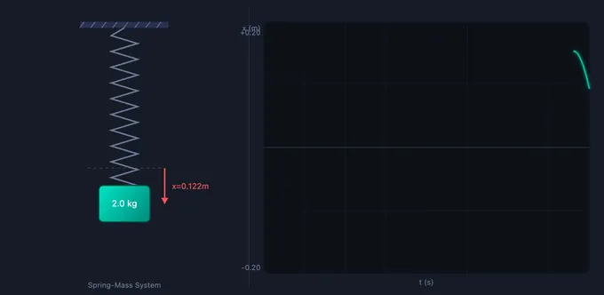

Simple Harmonic Motion
x(t) = A cos(ωt + φ) — Simulate, Explore, Practice & Quiz
1 Overview
This free simple harmonic motion period formula simulator lets you explore SHM through two classic systems: a vertical spring-mass oscillator and a simple pendulum. The interactive canvas shows the physical animation on the left and a live waveform graph on the right, plotting displacement x(t), velocity v(t), acceleration a(t), or energy curves in real time as the system oscillates.
All key SHM parameters are calculated instantly: angular frequency ω, frequency f, period T, instantaneous displacement, velocity, and acceleration. Whether you are studying the relationship T = 2π√(m/k) for springs or T = 2π√(L/g) for pendulums, this tool provides visual confirmation of every formula.
2 Setting the Scene
The simulator opens in Simulate mode with the Spring-Mass system active (m = 2 kg, k = 50 N/m, A = 0.2 m). The mass oscillates immediately, and the waveform graph traces x(t) in real time. Six readout cards display ω, frequency, period, displacement, velocity, and acceleration.
Use the System pills to switch between Spring-Mass and Pendulum. The Graph pills toggle between x(t), v(t), a(t), and Energy views. Sliders for mass, spring constant (or pendulum length), and amplitude are below the canvas. Presets like Clock Pendulum, Car Suspension, Tuning Fork, and Heavy Spring load realistic configurations instantly.
3 Running the Demo
Spring-Mass system: Adjust mass m (0.5–10 kg), spring constant k (5–200 N/m), and amplitude A (0.05–0.5 m). The animation shows the mass bouncing on a vertical spring while the graph traces the selected waveform. Increase mass to see the period T lengthen; increase k to see it shorten — confirming ω = √(k/m).
Pendulum system: Adjust length L (0.3–3 m) and amplitude. The period depends only on length and gravity: T = 2π√(L/g). Mass does not affect the pendulum’s period (for small angles), which you can verify by changing mass and observing no change in ω.
Energy graph: Select the Energy view to see kinetic and potential energy oscillate out of phase while total energy remains constant — a visual demonstration of energy conservation in SHM.
Press Reset to restart the animation from t = 0 with the current parameters.
4 Behind the Physics
Explore mode provides concept cards across three categories: Fundamentals (SHM definition, angular frequency, period, frequency, phase), Energy (KE, PE, total energy, energy conservation), and Applications (pendulum clocks, spring-mass dampers, musical instruments). Each card has a formula, a canvas diagram, and a worked numerical example.
Key equations covered include x(t) = A·cos(ωt + φ), v(t) = −Aω·sin(ωt), a(t) = −ω²x, PE = ½kx², and KE = ½mv². This mode bridges the gap between formula memorisation and physical understanding.
5 Try a Problem
Practice mode generates unlimited random SHM problems: find the period of a spring-mass system, calculate maximum velocity from amplitude and ω, determine the energy stored at maximum displacement, or compute pendulum length for a target period. Step-by-step solutions are shown for incorrect answers.
Quiz mode presents 5 randomised questions mixing conceptual and numerical items about SHM parameters, energy transformations, and system comparisons. A detailed score with per-question breakdown is shown at the end of each quiz.
6 Things to Notice
- Toggle between graph types to see how displacement, velocity, and acceleration relate — velocity leads displacement by 90°, and acceleration is 180° out of phase.
- Double the mass and observe the period increase by a factor of √2 — confirming the square-root dependency in T = 2π√(m/k).
- Switch to Energy view to watch KE and PE exchange in real time, with total energy remaining flat.
- Use the Pendulum system to verify that period is independent of mass and amplitude (for small angles).
- Try the presets — the Clock Pendulum has L = 0.25 m giving exactly T = 1 s, the standard for pendulum clocks.
- The simulator runs at 60 fps for smooth animation — pause by switching to Explore mode if you need to study a frozen frame.
What Is Simple Harmonic Motion (SHM)?

Simple Harmonic Motion is a fundamental type of periodic oscillation where the restoring force acting on an object is directly proportional to its displacement from an equilibrium position and always directed towards that equilibrium. Described by the equation x(t) = A cos(ωt + φ), SHM appears throughout mechanical engineering, physics, and everyday life — from the oscillation of a spring-mass system to the swing of a pendulum. Understanding SHM is essential for studying vibrations, wave mechanics, alternating current circuits, and structural dynamics.
This interactive simulator lets you explore SHM with two classic systems: a vertical spring-mass and a simple pendulum. Adjust mass, spring constant, length, and amplitude to see how the motion parameters change in real time. The waveform chart displays displacement, velocity, acceleration, or energy graphs alongside the animated physical system.
Key Equations of SHM
For a spring-mass system, the angular frequency is ω = √(k/m), where k is the spring constant and m is the mass. The period is T = 2π/ω and the frequency is f = 1/T. Displacement, velocity, and acceleration are related by: v(t) = −Aω sin(ωt) and a(t) = −Aω² cos(ωt) = −ω²x(t). For a simple pendulum of length L, the angular frequency is ω = √(g/L) for small-angle oscillations.
Energy in SHM
In an ideal SHM system with no damping, total mechanical energy is conserved. At maximum displacement, all energy is potential (PE = ½kx²); at the equilibrium position, all energy is kinetic (KE = ½mv²). The total energy E = ½kA² remains constant throughout the cycle. The energy graph in this simulator shows the continuous exchange between kinetic and potential energy as the mass oscillates.
Where ω = √(k/m) Comes From — A Short Derivation
The angular frequency formula is not arbitrary; it falls straight out of Newton’s second law. For a spring with stiffness k attached to a mass m, Hooke’s law gives the restoring force F = −kx. Substituting into F = ma and rearranging:
m·(d²x/dt²) = −k·x ⇒ d²x/dt² = −(k/m)·x
Any function whose second derivative is itself times a negative constant is a sinusoid. So x(t) = A·cos(ωt + φ) is a valid solution, and substituting back gives ω² = k/m. The same approach applied to a pendulum (with sinθ ≈ θ for small angles) yields ω² = g/L. The condition for SHM is therefore: any system whose restoring force is linear in displacement.
Worked Example — A 0.5 kg Mass on a 200 N/m Spring
Set the simulator to spring-mass mode, mass = 0.50 kg, k = 200 N/m, amplitude A = 0.05 m. The expected values:
| Quantity | Formula | Result |
|---|---|---|
| Angular frequency ω | √(k/m) = √(200/0.5) | 20 rad/s |
| Period T | 2π/ω = 2π/20 | 0.314 s |
| Frequency f | 1/T | 3.18 Hz |
| Max speed vmax | Aω = 0.05 × 20 | 1.0 m/s |
| Total energy E | ½kA² = ½(200)(0.05)² | 0.25 J |
| KE at equilibrium | ½m·vmax² | 0.25 J (matches E) |
Switch the chart to the Energy view as you run the simulation: the KE and PE curves should cross at the ½E line each time x = ±A/√2, and their sum should be a flat horizontal line at 0.25 J. If the line drifts downward, damping has been introduced — in the simulator you can toggle it off in Explore mode to see ideal SHM.
SHM in Disguise — Where the Same Equation Hides
One of the reasons SHM is taught early is that the same mathematical structure appears in systems that look completely different. Recognising the disguise saves you from re-deriving the answer:
- Simple pendulum (small angles) — the restoring torque from gravity is mgL·sinθ ≈ mgL·θ, giving ω = √(g/L). At larger angles the small-angle approximation fails and the period grows slightly — that is no longer SHM.
- LC circuit — charge on a capacitor obeys d²q/dt² = −(1/LC)·q, so ω = 1/√(LC). Voltage across the capacitor traces a perfect sinusoid, exactly like the spring’s position. See the RLC Circuit simulator for the damped analog.
- Water in a U-tube — if the column is displaced by h, the restoring force from the weight imbalance gives ω = √(2g/L) where L is the total water column length.
- Diatomic molecule near equilibrium — any potential energy well, expanded as a Taylor series around its minimum, is quadratic to leading order — meaning small-amplitude vibrations of any bonded atom pair are SHM. This is why bond stretching frequencies appear as sharp peaks in infrared spectra.
When the System Stops Being Simple Harmonic
The “simple” in SHM is doing real work. Three conditions break it — and the simulator can demonstrate each:
- Damping. Add any velocity-dependent friction and amplitude decays exponentially. The frequency is also slightly reduced (to ωd = ω·√(1−ζ²)). See the Spring-Mass-Damper simulator for the underdamped, critical and overdamped regimes.
- Driving force. An external periodic push at frequency ωf produces a steady-state response whose amplitude peaks near the natural frequency — resonance. This is how a child on a swing matches push-rate to swing-rate.
- Large amplitude (non-linear restoring force). A pendulum past about 15° or a spring past its elastic limit no longer obeys Hooke’s linear F = −kx. The period becomes amplitude-dependent and harmonics appear in the motion. Engineers call this regime “anharmonic.”
Selected References
- Kleppner, D. & Kolenkow, R. — An Introduction to Mechanics, 2nd ed., Cambridge University Press, Chapters 3 and 11.
- Halliday, Resnick & Walker — Fundamentals of Physics, 11th ed., Chapter 15 (Oscillations).
- Rao, S. S. — Mechanical Vibrations, 6th ed., Pearson, Chapter 2 (Free Vibration of Single-Degree-of-Freedom Systems).
Explore Related Simulators
If you found this Simple Harmonic Motion simulator helpful, explore our Refraction of Light simulator, Vibrations simulator, Hooke’s Law simulator, Spring Design simulator, Newton’s Laws simulator, and Simple Pendulum simulator for more hands-on practice.